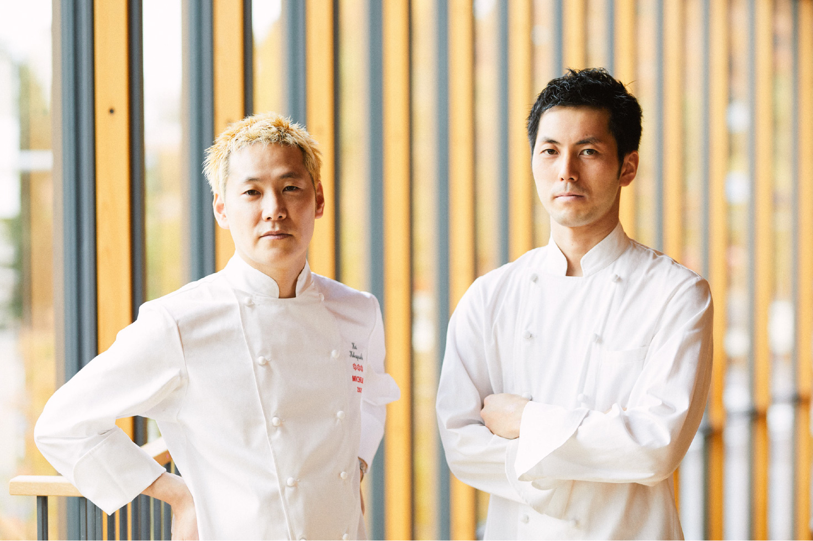
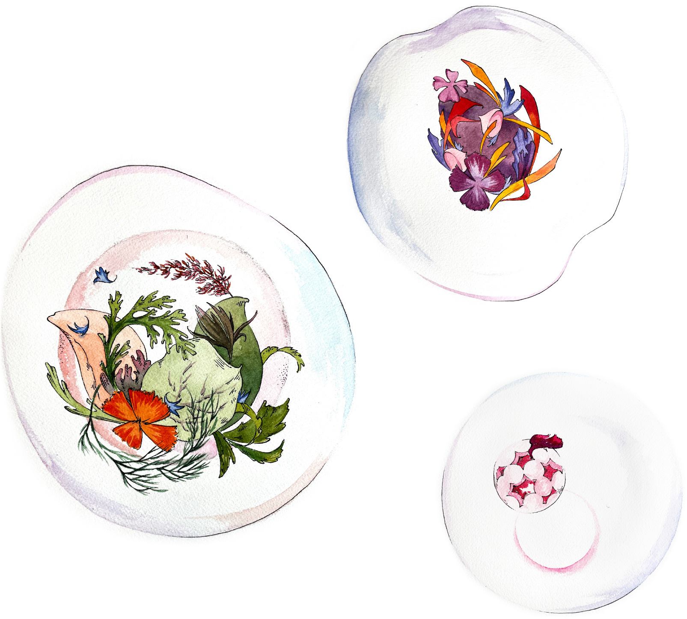

Maison KEIは、パリのフレンチレストラン「Restaurant KEI」と
和菓子屋「とらや」がはじめるフレンチレストランです。
パリや東京の喧騒から離れ、気軽に、少しゆったりと、
私たちの料理や菓子をお召し上がりいただきたいとの想いから、
食材と水の豊かな御殿場市東山に店を構えます。
富士山を望むこの地で、小林 圭氏が創造する料理をお楽しみください。
＊ 1月26日（火）～28日（木）の3日間、特別メニューでプレオープンいたします
- TEL
- 0550-81-2231
10:00～11:30、15:00～17:30にお電話ください
3月末日までの予約を承っています
- ＊
- スマートカジュアルを推奨しております。
男性の半ズボンやサンダルなど、極度にカジュアルな服装はご遠慮ください。
- ＊
- お子様同伴の場合は、個室のみのご予約とさせていただきます。
- ＊
- 当日キャンセルの場合は、100％のお料理代金×人数分を請求させていただきます。
-
出会いSTORY
-
「Restaurant KEI」のオーナーシェフ・小林 圭氏との出会いは、2010年。虎屋の18代当主・黒川 光晴がフランス・パリに勤務していたときのことです。当時、小林氏はご自身のレストラン「Restaurant KEI」の開業準備の真っ只中で、黒川は、食材調達に同行させていただいたり、厨房作業を見学させていただくなど、パリでのレストランの開業準備を目の当たりにし、多くの学びを得ました。2011年の開業後も交流が続き、常に味を突き詰め極められている小林氏の姿勢に大変感銘を受け、「いつかご一緒できる機会があれば」という思いを抱いていました。
そのようなご縁で、小林氏と共に、5年ほど前より御殿場市においてレストランの開業準備を進め、1月30日（土）にオープンの運びとなりました。
-
プロフィールPROFILE
-
 （写真左）小林 圭Kei Kobayashi
長野県生まれ。長野、東京、フランスと料理人としての研鑽を積む。フランスでは南仏やアルザス地方などの有名レストランにて地方の豊かさを学び、そしてパリへ。パリでは世界的なシェフ、アラン・デュカス氏のレストラン「アラン・デュカス・オ・プラザ・アテネ」に職を得て7年間働く。この間最後の４年はスーシェフを務めた。2011年3月にオーナーシェフとしてパリに「Restaurant KEI」をオープン。2020年1月にフランス版ミシュランガイドにて三ツ星を獲得。
（写真右）佐藤充宜Mitsuyoshi Sato
三重県生まれ。2006年エコール 辻 大阪にて学び、2007年から「ヌキテパ」(東京)、2010年から「エディションコウジシモムラ」(東京)にて勤務。2011年に24歳で渡仏、地方のレストランなどを経て、2015年から「Restaurant KEI」にて勤務。このたび「Maison KEI」シェフに就任。
-
料理FOOD
-

食材の命を大切にすること。
それは、わたしたちが手を加えることで最もおいしく召しあがっていただくこと。
それにより、絶たれた命はお客さまの記憶に生き続けると思っています。メニュー（コース料理）
- ランチ
- 3,500円（4皿）
6,500円（6皿）
- ディナー
- 4,800円（4皿）
7,800円（6皿）
＊ コースに飲み物、消費税、サービス料は含まれておりません。
＊ 1/26（火）～28（木）のプレオープン期間は特別メニュー（ランチ5,500円、ディナー6,500円）にて営業いたします。
-
交通案内ACCESS
-

〈お車でお越しの方〉
東名高速道路御殿場IC第2出口前、石橋交差点を右折
→ 湖水前交差点を左折
→ 300メートル進むと、右側に「とらや工房 東山旧岸邸 駐車場」*カーナビをご利用の場合、お客様駐車場に正しく案内されない場合がございます。
上記案内図をご覧になり、東山観音堂斜め向かいのお客様駐車場をご利用ください。〈電車でお越しの方〉
JR御殿場線 御殿場駅下車タクシーで15分■ 営業時間
ランチ 11:30〜
ディナー 17:30〜■ 定休日
火曜日・水曜日
＊ 2月1日（月）は臨時休業■ 店舗情報
〒412-0024
静岡県御殿場市東山527-1
Tel：0550-81-2231
- TEL
- 0550-81-2231
10:00～11:30、15:00～17:30にお電話ください
3月末日までの予約を承っています
- ＊
- スマートカジュアルを推奨しております。
男性の半ズボンやサンダルなど、極度にカジュアルな服装はご遠慮ください。
- ＊
- お子様同伴の場合は、個室のみのご予約とさせていただきます。
- ＊
- 当日キャンセルの場合は、100％のお料理代金×人数分を請求させていただきます。